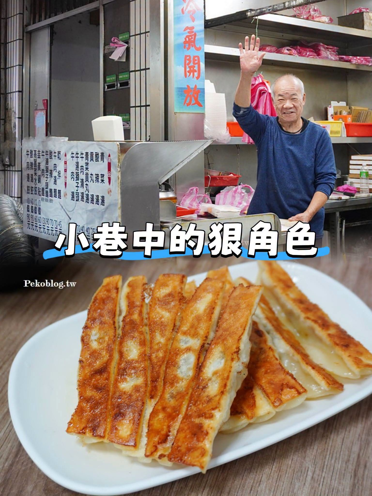

鄉民食堂｜張記鍋貼牛肉麵：西門町中山堂旁小巷裡的韭黃鍋貼老店
來源是鄉民食堂 Facebook 貼文，內容轉介 PEKO の Simple Life 食記〈張記鍋貼牛肉麵〉。公開頁可見文字顯示，這間店藏在西門町中山堂對面巷子裡，主打韭黃鍋貼、牛肉麵與牛湯獅子頭。

一句話摘要
張記鍋貼牛肉麵是西門町／中山堂附近可收藏的小巷老店：招牌韭黃鍋貼一份 10 顆、貼文與 PEKO 食記記錄 2024 年底為 60 元，特色是韭黃豬肉餡、自製辣椒醬、牛湯獅子頭與可買冷凍鍋貼／水餃／獅子頭；店家週末公休，前往前建議再確認價格與營業狀態。
可確認的公開內容
- Facebook 作者：鄉民食堂。
- Facebook canonical：`https://www.facebook.com/photo.php?fbid=1464705645695250&set=a.541132484719242&type=3`
- 貼文可見互動：約 149 個讚、14 則留言、8 次分享。
- 轉介食記：PEKO の Simple Life `https://pekoblog.tw/zhangji/`。
- 圖片文字：`小巷中的狠角色`，畫面包含店主揮手、店內菜單與一盤煎至金黃的鍋貼。
店家資訊
- 店名：張記鍋貼牛肉麵
- 電話：02 2388 6482
- 地址：台北市中正區衡陽路 79-1 號
- 位置：西門町中山堂對面巷子，捷運西門站 4 號出口步行約 5 分鐘
- 營業時間：11:00–14:00 / 16:30–19:30
- 固定公休：星期六、星期天
餐點與特色
- 招牌韭黃鍋貼：貼文稱日賣超過 2,000 顆；PEKO 食記記錄 2024 年 12 月菜單為一顆 6 元、10 顆 60 元。
- 鍋貼餡料：韭黃豬肉餡，不是一般韭菜豬肉餡；調味鹹淡適中，不沾醬也可吃。
- 自製辣椒醬：辣度不算特別高，但香氣明顯，也可整罐購買。
- 牛湯獅子頭：兩大顆獅子頭加小塊油豆腐，先炸後蒸，外 Q 內綿密；牛肉湯加酸菜，走清爽路線。
- 其他：牛肉麵、水餃、小菜；也販售冷凍水餃、鍋貼、獅子頭。
背景故事
PEKO 食記指出，張記鍋貼牛肉麵起源於板橋後菜園街，後來搬到台北衡陽路。貼文與食記都提到，這家店的鍋貼吸引日本人拜師學藝，並在日本東京、大阪開出 4 間店，是小巷裡不太起眼但有故事的老店。
欒帥可用的收藏方式
這筆適合收在「生活資料／台北美食／西門町」：
- 區域：台北中正區、西門町、中山堂、衡陽路
- 類型：鍋貼、水餃、牛肉麵、老店小吃
- 必點：韭黃鍋貼、牛湯獅子頭、自製辣椒醬
- 可搭配：同巷的蘇記餃子館；若專程去，可安排兩家一起比較
- 注意：週末公休，且留言有人回報鍋貼可能已漲到 70 元，價格以現場為準
注意事項
- Facebook 登出頁可見留言提到「鍋貼現在應該 70 元」，與 PEKO 食記 2024 年 12 月菜單「10 顆 60 元」可能有時間差；本文保留兩者並建議以現場為準。
- 本次未登入 Facebook，也未查詢 Google Maps 即時營業狀態。
- PEKO 食記發布於 2025-07-14；若日後要前往，建議再電話確認營業時間與公休。
Why it matters
欒帥分享的生活型內容若有明確店名、地址、招牌品項、價格線索與可搭配行程，就值得歸檔成可搜尋的生活知識。張記鍋貼牛肉麵這筆資料特別適合放進西門町／中山堂附近美食清單，日後可和蘇記餃子館、桃源街／衡陽路老店一起整理。